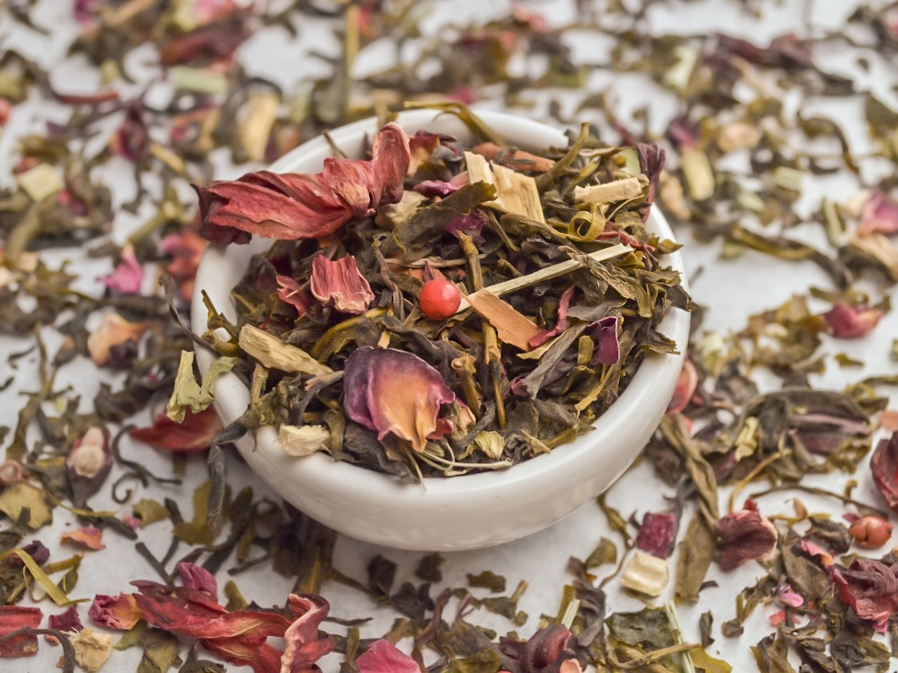

Blend con té verde, rico en antioxidantes. Détox y digestivo.
Purificación es una gran manera de apretar el botón de reinicio. Una manera natural de buscar un poco de equilibrio. Ideal para mejorar, optimizar y apoyar los procesos naturales de tu cuerpo, de tu alma y de tu espíritu.
Color: Amarillo verdeante.
Aroma: Dulce, frutal, cítrico, chispeante y herbal.
Sabor: Dulce y chispeante, refrescante.
Ingredientes:
Té verde, hibiscus, jengibre, amargón, pétalos de rosa, canela, cola de caballo, pimienta rosa..
